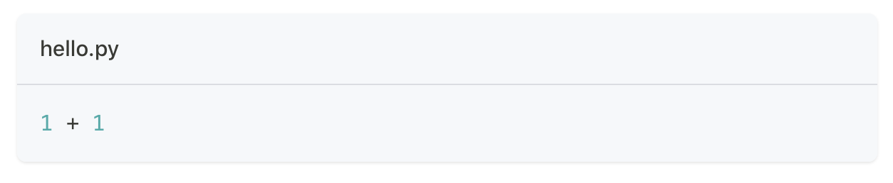
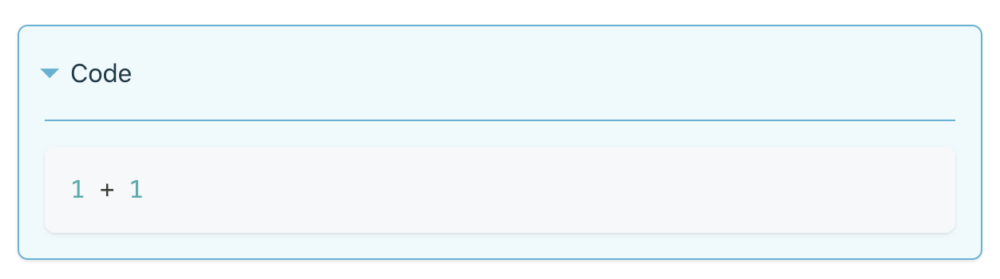
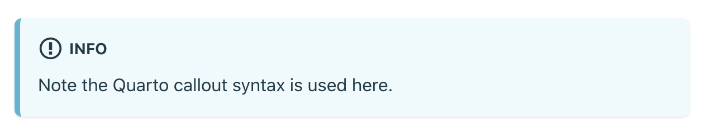
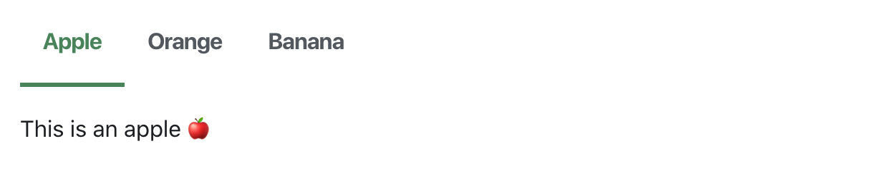

Docusaurus
Overview
Docusaurus is a popular markdown documentation system. Pages in Docusaurus websites are typically written in plain markdown, so don’t have a straightforward way to automatically and reproducibly incorporate computational output.
Using the Quarto docusaurus-md format, you can incorporate computational output (e.g. R or Python code that produces plots) into Docusaurus websites. This article explains how.
It’s important to note that many of the Quarto features related to theming, page layout, and navigation are not applicable when you are using Quarto with Docusaurus. Docusaurus has its own theming system, syntax highlighting, table of contents, page layout, navigational menus, and full text search. You’ll use Quarto to execute code and generate markdown that is rendered within the Docusaurus HTML publishing framework rather than Quarto’s own.
Workflow
The basic concept of using Quarto with Docusaurus is that you take computational markdown documents (.qmd) or Jupyter notebooks (.ipynb) and use them to generate plain markdown files (.md) that are rendered to HTML by Docusaurus.
index.qmd quarto => index.md docusaurus => index.html
The quarto render and quarto preview commands are used to transform .qmd or .ipynb files to Docusaurus compatible markdown (.md). The computational files are located in the same place you would also locate ordinary markdown files (e.g. the blog directory).
After rendering, a plain .md file is written right alongside the computational document. This markdown file is then processed by Docusaurus.
Live Preview
The quarto preview command will automatically recognize when it is run from a directory that contains a Docusaurus website:
Terminal
cd my-docusaurus-website
quarto previewThis will automatically run docusaurus start on your behalf to bring up a local preview server. In addition, it will monitor the filesystem for changes to .qmd and .ipynb inputs and automatically re-render them to Docusaurus compatible .md files when they change.
Note that this also works for the integrated Render/Preview command within the Quarto VS Code Extension.
Rendering
If you are not previewing and want to render all of the Quarto documents (.qmd) and notebooks (.ipynb) in your site, call quarto render from the root directory of the site:
Terminal
cd my-docusaurus-website
quarto render Typically you’ll want to do a quarto render at the site level before you build the site for publishing:
Terminal
quarto render && npm run buildYou can also render individual documents or notebooks:
Terminal
quarto render blog/2022-07-26/hello-quarto/index.qmdIf you have computationally expensive documents you may want to consider using Quarto’s freeze feature to only re-execute code when your document source code changes.
Note that if aren’t ever rendering at the project level and just have individual files that you want to render with Quarto, you should specify the docusaurus-md format as follows:
---
title: "My Blog Post"
format: docusaurus-md
---Configuration
While Quarto works well within a Docusaurus site that has no _quarto.yml project config file, you can add one if you want to customize the default behavior, add a bibliography, etc. For example, here is what a simple customized _quarto.yml file might look like:
_quarto.yml
project:
type: docusaurus
format:
docusaurus-md:
code-fold: true
execute:
warning: false
biliography: references.libIt’s important to note that if you do provide an explicit _quarto.yml file you need to explicitly specify the project type (type: docusaurus) as shown above.
External Directory
You might decide that you prefer to keep all of your Quarto documents and/or notebooks in their own directory, separate from the Docusaurus website. In this configuration you would mirror the directory structure of your site in the Quarto directory, and then set the output-dir in the project file to point to the Docusaurus directory. For example:
_quarto.yml
project:
type: docusaurus
output-dir: ../docusaurus-siteCode Blocks
Code blocks in Docusaurus are very similar to Quarto. One important thing to keep in mind is that the syntax highlighting theme comes from Docusaurus rather than Quarto. See the theming documentation for additional details.
If you use the filename attribute in Quarto, it will automatically become the code block title in Docusaurus:
```{.python filename="hello.py"}
1 + 1
```
Code folding is also automatically applied. So, for example the following executable code block:
```{python}
#| code-fold: true
1 + 1Is rendered as a collasable block in Docusaurus:

Callouts & Tabsets
Like Quarto, Docusaurus includes support for Callouts and Tabsets. When including these components in a document, you should use the Quarto standard markdown syntax, which will be automatically translated to the appropriate Docusaurus constructs.
For example, here is a Quarto callout:
::: {.callout-important}
Note the Quarto callout syntax is used here.
:::Which renders in Docusaurus as:

Here is a Quarto tabset:
::: {.panel-tabset group="fruits"}
## Apple
This is an apple 🍎
## Orange
This is an orange 🍊
## Banana
This is a banana 🍌
:::Which renders in Docusaurus as:

HTML and MDX
Docusaurus websites use a flavor of markdown (MDX) that has some major differences from Pandoc (Quarto’s native markdown renderer), the biggest of which is that while Quarto allows embedding of HTML, MDX does not. Rather, MDX allows direct embedding of JavaScript code and React JSX components (which look like HTML but have some significant differences in behavior).
Quarto’s support for Docusaurus accounts for these differences, and enables you to embed raw HTML as well as use MDX components and JavaScript when required.
HTML Blocks
Docusaurus websites don’t allow arbitrary HTML content. Rather, JSX is used to emit HTML tags. While these JSX tags look and act like HTML tags most of the time, there are some important caveats and constraints, most notably that the class attribute must be written as className, and style attributes need to be specified as JavaScript objects rather than CSS strings.
If you need to include raw HTML that doesn’t conform to JSX, you should use a raw ```{=html} code block. For example:
```{=html}
<p style="color: green;">Paragraph</p>
```If you need to embed HTML code (e.g. a badge, video, or tweet) you should definitely use raw HTML blocks as shown above to avoid errors which will occur if JSX encounters tags it can’t parse.
Note that HTML produced by computations (e.g. a Pandas data frame displayed in a notebook) often use raw HTML with class and/or style tags. This computational output is automatically included in a raw ```{=html} code block so that it renders correctly in Docusaurus.
MDX Blocks
You can also use MDX components and JavaScript within Quarto documents that target Docusaurus. To do this, enclose them in an ```{=mdx} raw code block. For example:
```{=mdx}
export const Highlight = ({children, color}) => (
<span
style={{
backgroundColor: color,
borderRadius: '2px',
color: '#fff',
padding: '0.2rem',
}}>
{children}
</span>
);
<Highlight color="#25c2a0">Docusaurus GREEN</Highlight> and <Highlight color="#1877F2">Rams blue</Highlight> are my favorite colors.
I can write **Markdown** alongside my _JSX_!
```Which is rendered as follows:
Note that ordinary markdown content can also be included in mdx blocks alonside JavaScript and React components.
LaTeX Math
By default, Quarto renders LaTeX math within Docusaurus projects using WebTeX, a service that creates PNG images for publishing on the web given TeX expressions as input.
WebTeX works for any web page that can display images, and requires no special JavaScript or CSS. Any inline or display equations contained within your document will be converted to an image URL that requests a rendered version of the equation. For example, the following markdown:
$x + 1$Will be converted to:
Which renders as:
Dark Mode
SVG is used as the default rendering method because it has the best overall appearance. However, if your docusaurus document is being rendered on a dark background, you may want to switch to PNG with a dark background specified. You can do this as follows:
format:
docusaurus:
html-math-method:
method: webtex
url: https://latex.codecogs.com/png.image?%5Cbg_black&space;KaTeX
It is possible to configure Docusaurus to use KaTeX for math rendering. See the Docusaurus documentation on using KaTeX to learn more about this option.
Once you’ve confirmed that KaTeX is rendering equations correctly in your site, you should update your _quarto.yml file to specify that katex rather than webtex should be used for rendering equations:
_quarto.yml
format:
docusaurus-md:
html-math-method: katex